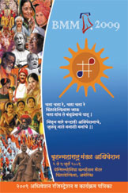

BMM 
BMM will be hosting the Marathi Convention this year at Philadelphia from July 2 to July 2009. BMM is requesting and encouraging members to consider donor packages. The information regarding donor packages is on BMM's website.
For example, those who can support BMM activities with a donation of $1000, two registrations, two food packages and reserved seating in front are being offered (a total benefit of $500). With a tax benefit, it may be an extra spend of $200-250; however, it is a great opportunity to help out and be recognized. There are also other opportunities for sponsorship and participation in the trade and business expo. which will benefit people who are engaged in businesses including non-Maharashtrian business owners.
The details of the program, dignitaries & venue can be found in the February and March BMM Vrutta.
The BMM invitation can be seen here.
The program details are as below:
- Asha Bhosle with Sudesh Bhosle & bollywood musicians: 1 Hindi program (Charged separately on 2nd July Evening) & 1 Marathi Program (Part of the convention)
- Hasya-Panchami: Specially designed program for the convention based on last 50 Years history of Comedy plays from Marathi Rang-bhoomi by Suyog starring all the big names from current actors & actresses.
- Suyog will also present 2 Full commercial Dramas (Performers TBD)
- Awagha Rang Ekachi zala - Written by Dr. Meena Nerurkar. Starring Prasad Savkar, Amol Bawadekar, wonder girl Swarangi Marathe and Others.
- Maitar: Starring Subodh Bhave, Sharvari Jamenis, Salil Kulkarni, Sandeep Khare & Shaunak Abhisheki
- Dharohar: Starring Raghunandan Panshikar, Rahul Deshpande & Shaunak Abhisheki
- Trigalbundi: Pt. Satish Vyas (Santoor ), Pt. Vijay Ghate (Tabla ) & Pt. Bhavani Shankar (Pakhawaj)
- Gaanare Violin: Pt. Prabhakar Jog
- Marathi Gazal: Gazal nawaz Bheemrao Panchale
- Loksangeet: Shahir Vithal Umap, Nandesh Umap & dholki samrat Pandurung Ghotkar
- Tarunaee: Programe by all Saregama Finalist. Mangesh Borgaonkar, Saee Tembhekar, Amol Bawadekar & Sayali Oak
- Taalatma: Aditi Bhagwat, Mukul Dongre & Ravindra Chari
- Shevantiche bun: Chandrakant Kale, Madhuri Purandare & Prachi Duble
- Kavyerkatha: Program based on Ravindranath Tagore’s Kavita - Chandrakant Kale, Subodh Bhave, Shavari Jamenis & Prachi Duble
- Vishwanayika: This is a unique program presenting first time American performing major part. Natalia Heildner with Vijay Kadam & all NA artists
- Laya Lalitya: Program compiled by Guru Archana Joglekar


{kind=link}